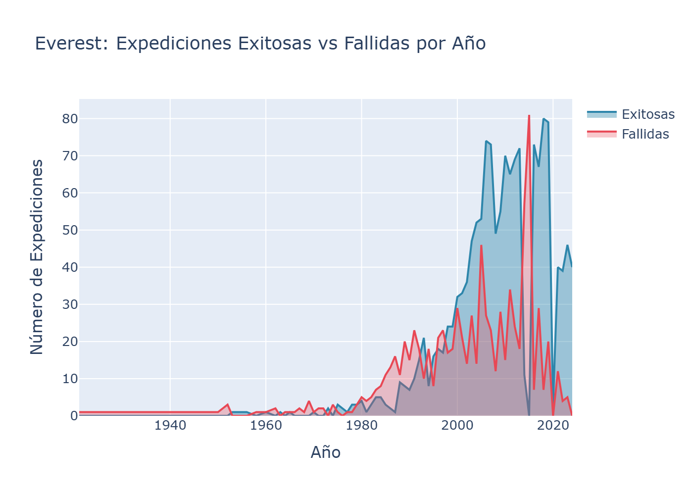
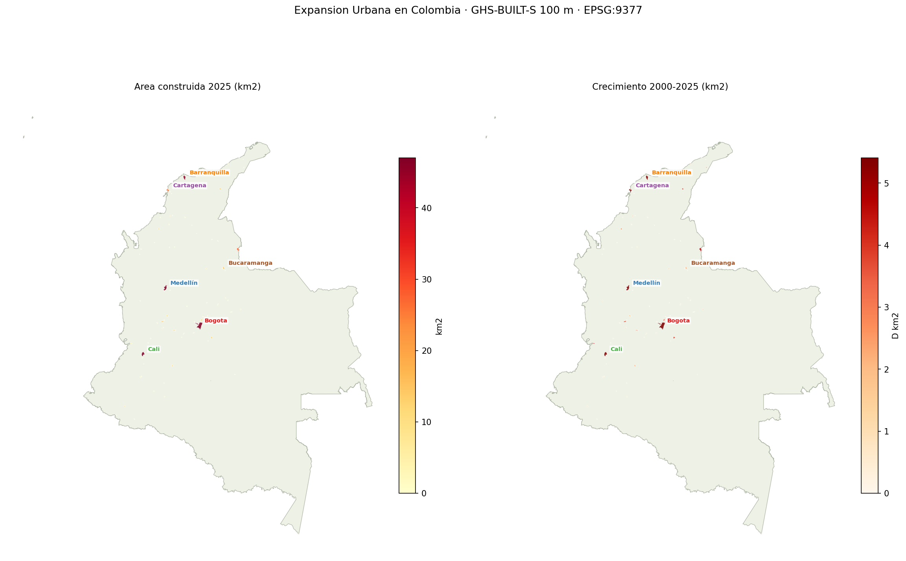

Expediciones Himaláyicas (1905–2024)
Análisis de 120 años de montañismo: 11 562 expediciones, 481 picos y tendencias históricas de éxito en el Himalaya.
Data Analyst · GIS & BI · Colombia
Transformo datos geoespaciales complejos en insights accionables para infraestructura, medio ambiente y logística.
Soy analista de datos con base en ingeniería ambiental y especialización en Sistemas de Información Geográfica. Combino Python, SQL y herramientas de BI con análisis geoespacial para resolver preguntas analíticas en proyectos de infraestructura, medio ambiente y logística. Me motiva convertir datos ruidosos y heterogéneos en decisiones claras y basadas en evidencia. Actualmente trabajo como GIS Specialist en AECOM, Bogotá.
Lenguajes
Datos / EDA
Geoespacial
Estadística espacial
BI / Visualización
Bases de datos
Herramientas

Análisis de 120 años de montañismo: 11 562 expediciones, 481 picos y tendencias históricas de éxito en el Himalaya.

Pipeline geoespacial end-to-end: 85 ciudades colombianas, 8 fuentes de datos y 6 módulos analíticos sobre crecimiento, sprawl y riesgos ambientales.

Estadística espacial avanzada sobre 100 000 órdenes brasileñas: clustering, regresión ponderada y autocorrelación integradas en un dashboard interactivo.